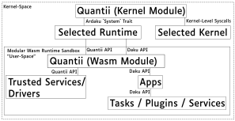

Welcome!
You have arrived in the future!
This is the Quantii book, which will allow you to familiarize yourself with the projects goals, ambitions, design decisions and getting started with it.
Note Quantii is still in a very early stage of development.
What is Quantii?
Quantii is a general-purpose operating system written in Rust. The intent of Quantii is to provide a secure and portable OS model based around WebAssembly.
In order to support existing software, Quantii can run code compiled for wasi32.
Inspired by web technologies like WebAssembly and WGPU, as well as a BSD-inspired syscall model, Quantii builds on modern trends in technology and takes them to the extreme to create the most frictionless, futuristic OS that will exist yet.
Current Quantii targets:
- arm64 (Raspberry Pi 3/4)
- riscv64imac (VisionFive / Sipeed LicheeRV)
Quantii's Goals
Quantii's ultimate goal is to become a competitor to the major operating systems of today, spanning both desktop an mobile platforms (Linux, Windows, MacOS, Android, and iOS).
We want to provide a lean, portable, performant, secure, and accessible OS with the user experience of artists, businesses, and developers at top-priority.
Quantii's Non-Goals
We do not aim to be Unix-like or Windows-like in any way, nor POSIX-compliant. Neither do we aim for familiarity for the case of older users used to 90s-style user interfaces.
Installing
TODO
QEMU
TODO
Raspberry Pi
TODO
VisionFive
TODO
Sipeed LicheeRV
TODO
Design
High-Level Architecture Design
This diagram shows a high-level representation of the interactions between different modules running on Quantii.
Note that in order to be as portable as possible to as many platforms, Quantii can switch out components via feature flags:
The kernel can be switched out to be either:
- Novusk (Linux-inspired microkernel)
- Neutron (Minimalist kernel)
The WebAssembly runtime can be switched out to be either:
- Wari (Ahead-of-time Compiled)
- Wasmi (Interpreted - Mostly for testing)
Note: Runtimes currently need to compile to no-std to run on Quantii.

Drivers
These lists are non-exhaustive and likely to change drastically.
Kernel Drivers
There should be as few kernel drivers as possible (to reduce the amount of unsandboxed drivers), and should be as close to the metal as they can (while still being portable). Kernel drivers interface with userspace via the Quantii API.
- USB
- Bluetooth
- Network
- Display
- Aux
- Touchscreen
- Power
- Haptic
- Accelerometer
- Gyro
- Broadband
- GPIO
- VFS (Virtual File System, or Filesystem-As-A-File)
- WGPU
- Built-in Camera
Userspace Drivers / Services
Userspace drivers are drivers that run within the WebAssembly sandboxed environment. Userspace drivers are the only services that can access the Quantii API, so some just forward directly to the kernel driver.
- Keyboard (deps: USB, Bluetooth)
- Cursor (deps: USB, Touchscreen)
- Joystick (deps: USB, Bluetooth)
- Audio (deps: USB, Bluetooth, Aux)
- HTTP (deps: Network)
- TCP (deps: Network)
- UDP (deps: Network)
- Window (deps: Display, Keyboard, Cursor, WGPU)
- EmberFS (deps: VFS)
- WASI (deps: EmberFS, TCP, UDP)
- Transcoder (deps: WGPU)
- Camera (deps: Built-in Camera, USB, Transcoder)
Quantii API
The Quantii API functions as a bridge between kernel drivers and Quantii's userspace drivers that can be shared across kernels.
TODO
Daku API
TODO
Ardaku
TODO
Neutron Integration
TODO
NeutronFS
TODO
Qiish
TODO
Novusk Integration
TODO
Side Projects
TODO
Sprengui
TODO
Cala
TODO